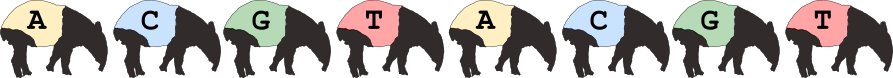

Overview of Tapirs
Tapirs is a Snakemake workflow system to reproducibly process metabarcode DNA sequences and assign taxonomy.
The Tapirs workflow starts with a directory of demultiplexed fastq.gz sequences. There are three key sections to its workflow:
- Quality Control quality trimming, length trimming, denoising to remove errors, and dereplication to remove redundancy
- Taxonomic Assignment Taxonomic identity is assigned to each sequence by a variety of methods including blast with different LCA approaches, and Karken2. Since we use a workflow manager (Snakemake) methods can easily be added to this list without affecting the rest of the workflow
- Reports and Graphical Display The workflow will write a detailed report of its analyses and actions, and output to standard format BIOM and .tsv files. Krona is used to create interactive html graphical displays of the data. The Vegan R package is used to calculate diversity statistics and plots.
Quickstart
- install conda (miniconda)
- git clone the Tapirs repository
git clone https://github.com/davelunt/Tapirs
- create and activate a conda environment from the Tapirs
environment.yamlfileconda env create --file environment.yaml
- edit the
config.yamlto identify the location of demultiplexed data and databases - dry run
snakemake -nprto identify any issues - run
snakemake
See the installation and setup pages for more detailed help
Licence and citation
Project led by Dave Lunt, Mike Winter, Graham Sellers, Marco Benucci, and the EvoHull group at the University of Hull, UK.
The software is released as CC0, public domain, you may do as you wish.
Please cite the software like this:
Title: Tapirs: extensible reproducible workflows for metabarcoding
Authors:
doi: 1234567
URL: https://github.com/davelunt/Tapirs
Please also cite the software generating the analyses. An appropriate way to do this would be: "A reproducible metabarcoding workflow was implemented in Tapirs [1] using vsearch [2], blast [3], Kraken2 [4], and Krona [5]."